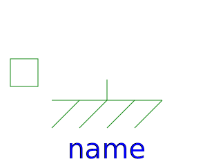
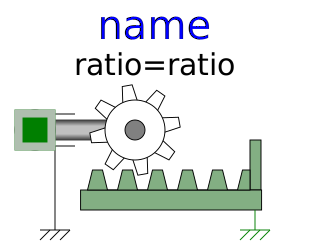
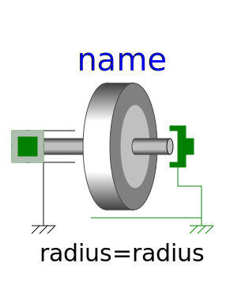
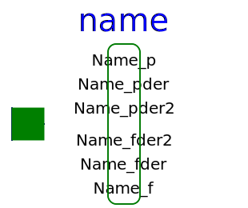

This package contains basic components 1D mechanical translational drive trains.
| Name | Description |
|---|---|
|  Fixed | Fixed flange |
| Sliding mass with inertia | |
| Rod without inertia | |
| Linear 1D translational spring | |
| Linear 1D translational damper | |
| Linear 1D translational spring and damper in parallel | |
| 1D translational spring damper combination with gap | |
| Coulomb friction in support | |
| Brake based on Coulomb friction | |
|  IdealGearR2T | Gearbox transforming rotational into translational motion |
|  IdealRollingWheel | Simple 1-dim. model of an ideal rolling wheel without inertia |
|
|
Initializes a flange with pre-defined position, speed and acceleration (usually, this is reference data from a control bus) |
|
|
Sliding mass with hard stop and Stribeck friction |
| Definition of relative state variables | |
|  GeneralForceToPositionAdaptor | Signal adaptor for a Translational flange with position, speed, and acceleration as outputs and force as input (especially useful for FMUs) |
|
|
Signal adaptor for a Translational flange with force as output and position, speed and acceleration as input (especially useful for FMUs) |